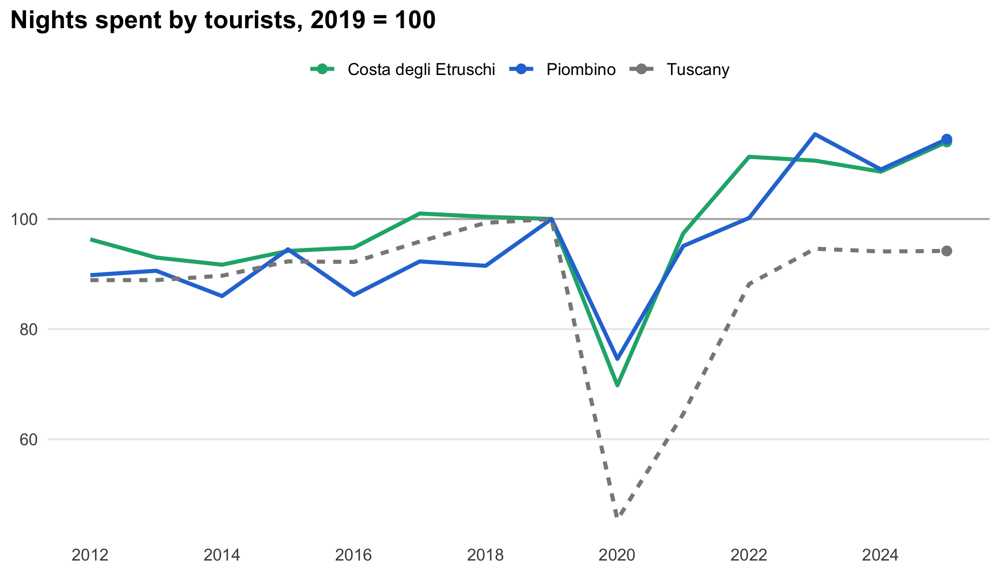
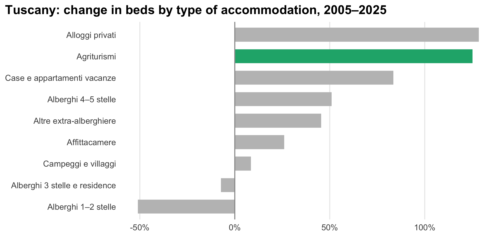
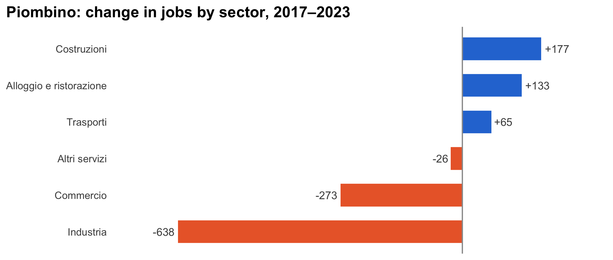

A hands-on tour of DuckDB, from messy open data to answers
DuckDB 2.0 came out today. This post puts it to work on real data: fourteen years of tourism in all 273 Tuscan comuni, plus population and local businesses. With a few SQL queries we find where tourists sleep, how much they weigh on residents, which kinds of accommodation are growing, and how Piombino compares.
Every Monday morning a small robot wakes up in this blog’s repository. It downloads the latest tourism data from the Regione Toscana, cleans it, and rebuilds the tourism dashboard. The dashboard is the finished product. This post is about the workshop behind it, and about a tool that makes the workshop much more pleasant: DuckDB.
DuckDB 2.0 was released today, so it seems a good moment to show what it does with real data instead of toy examples.
DuckDB is a database that lives inside your program. There is no server to install, no user to create, no port to open. You load it in R or Python (or run a single executable in the terminal) and you can immediately query CSV, Parquet, JSON or Excel files with SQL, as if they were tables. It is built for analysis: summing, grouping, joining and ranking millions of rows on a laptop, quickly. People often describe it as “SQLite for analytics”, and the comparison holds: SQLite is perfect for an app that saves and reads single records; DuckDB is made to crunch whole columns.
In R it takes two lines:
install.packages("duckdb")
con <- DBI::dbConnect(duckdb::duckdb()) # an in-memory database, gone when R closesFrom there on, every grey box in this post with SQL in it is a real query that ran while the page was built.
Open data rarely arrives clean. The Regione publishes one file per year with the arrivals and nights of tourists in each comune. DuckDB can read all fourteen of them with a single wildcard, and it is a good way to discover what we are dealing with:
SELECT filename, count(*) AS rows
FROM read_csv(?raw || '/mov*.csv', union_by_name = true, all_varchar = true, filename = true)
GROUP BY filename
ORDER BY filename| filename | rows |
|---|---|
| /Users/marco_rispoli/Documents/GitHub/Marco_Rispoli_blog/tools/turismo/raw/mov2012.csv | 856 |
| /Users/marco_rispoli/Documents/GitHub/Marco_Rispoli_blog/tools/turismo/raw/mov2013.csv | 856 |
| /Users/marco_rispoli/Documents/GitHub/Marco_Rispoli_blog/tools/turismo/raw/mov2014.csv | 551 |
| /Users/marco_rispoli/Documents/GitHub/Marco_Rispoli_blog/tools/turismo/raw/mov2015.csv | 558 |
| /Users/marco_rispoli/Documents/GitHub/Marco_Rispoli_blog/tools/turismo/raw/mov2016.csv | 551 |
| /Users/marco_rispoli/Documents/GitHub/Marco_Rispoli_blog/tools/turismo/raw/mov2017.csv | 548 |
| /Users/marco_rispoli/Documents/GitHub/Marco_Rispoli_blog/tools/turismo/raw/mov2018.csv | 544 |
| /Users/marco_rispoli/Documents/GitHub/Marco_Rispoli_blog/tools/turismo/raw/mov2019.csv | 544 |
| /Users/marco_rispoli/Documents/GitHub/Marco_Rispoli_blog/tools/turismo/raw/mov2020.csv | 540 |
| /Users/marco_rispoli/Documents/GitHub/Marco_Rispoli_blog/tools/turismo/raw/mov2021.csv | 540 |
| /Users/marco_rispoli/Documents/GitHub/Marco_Rispoli_blog/tools/turismo/raw/mov2022.csv | 542 |
| /Users/marco_rispoli/Documents/GitHub/Marco_Rispoli_blog/tools/turismo/raw/mov2023.csv | 542 |
Reading them all was easy. Making sense of them is another matter:
SELECT count(*) AS different_column_names
FROM (DESCRIBE SELECT * FROM read_csv(?raw || '/mov*.csv', union_by_name = true, all_varchar = true))| different_column_names |
|---|
| 27 |
Twenty-seven different column names for what are, in the end, the same seven or eight pieces of information. Over the years the files changed the header (Comune (cod. Istat), Cod_Istat_Comune, codi_istat_comune…), the layout (one row per comune and origin, or one row with Italians and foreigners side by side), the separator, and even the number format: in 2016 the figures are written with a dot for thousands, so 4.542 means four thousand five hundred, not four and a half.
This is the unglamorous part of any data project. The dashboard script takes care of it once, in Python, and writes a set of clean, tidy tables in tools/turismo/dati_puliti/: one row per comune and year, the same column names every year, real numbers. You can download them from GitHub and follow along.
With clean files, a CSV behaves like a table. No import step:
SELECT * FROM read_csv(?dati || '/comuni.csv') LIMIT 5| codice | comune | provincia | ambito |
|---|---|---|---|
| 052001 | Abbadia San Salvatore | Siena | Amiata |
| 047023 | Abetone Cutigliano | Pistoia | Pistoia e Montagna Pistoiese |
| 047002 | Agliana | Pistoia | Pistoia e Montagna Pistoiese |
| 046001 | Altopascio | Lucca | Piana di Lucca |
| 051001 | Anghiari | Arezzo | Valtiberina Toscana |
Look at the first column. Piombino’s ISTAT code is 049012, but DuckDB sniffed the column, saw only digits and decided it was a number, so the leading zero is gone. A classic trap. We tell it explicitly that the code is text, and while we are at it we give each file a proper name as a view (a saved query that reads the file whenever it is used):
SELECT * FROM comuni WHERE comune = 'Piombino'| codice | comune | provincia | ambito |
|---|---|---|---|
| 049012 | Piombino | Livorno | Costa degli Etruschi |
Now the code keeps its zero, and we have six tables to play with:
One last convenience: a view that joins tourism and geography and adds the totals we will use all the time.
CREATE VIEW turismo AS
SELECT m.*, c.comune, c.provincia, c.ambito,
arrivi_italiani + arrivi_stranieri AS arrivi,
presenze_italiani + presenze_stranieri AS presenze
FROM movimenti m
JOIN comuni c USING (codice)The simplest question first: the top ten comuni by nights spent in 2025. rank() is a window function: it computes the position of each row without collapsing the table. And QUALIFY is a small DuckDB gift: it filters on the result of a window function, which in standard SQL would need a subquery.
SELECT rank() OVER (ORDER BY presenze DESC) AS pos,
comune, ambito,
presenze,
round(presenze / arrivi, 1) AS nights_per_guest
FROM turismo
WHERE anno = 2025
QUALIFY pos <= 10
ORDER BY pos| pos | comune | ambito | presenze | nights_per_guest |
|---|---|---|---|---|
| 1 | Firenze | Firenze e Area Fiorentina | 9652079 | 2.3 |
| 2 | Pisa | Terre di Pisa | 1811889 | 2.1 |
| 3 | Montecatini-Terme | Valdinievole | 1493474 | 2.5 |
| 4 | San Vincenzo | Costa degli Etruschi | 1187279 | 5.9 |
| 5 | Castiglione della Pescaia | Maremma Toscana Area Nord | 1178025 | 5.4 |
| 6 | Bibbona | Costa degli Etruschi | 1136515 | 6.6 |
| 7 | Capoliveri | Elba e Isole di Toscana | 1106116 | 6.5 |
| 8 | Siena | Terre di Siena | 1049828 | 2.2 |
| 9 | Castagneto Carducci | Costa degli Etruschi | 1044685 | 6.6 |
| 10 | Piombino | Costa degli Etruschi | 1007626 | 6.0 |
Florence alone hosts more than a fifth of all the nights in Tuscany. But look at the last column: in Florence, Pisa and Siena guests stay about two nights; in San Vincenzo, Bibbona, Capoliveri and Piombino they stay six. Two different kinds of tourism hide behind the same total, the city break and the seaside holiday. Piombino closes the top ten, with just over a million nights.
Change one word, add a PARTITION BY, and we get the leader of each province instead:
SELECT provincia, comune, presenze
FROM turismo
WHERE anno = 2025
QUALIFY rank() OVER (PARTITION BY provincia ORDER BY presenze DESC) = 1
ORDER BY presenze DESC| provincia | comune | presenze |
|---|---|---|
| Firenze | Firenze | 9652079 |
| Pisa | Pisa | 1811889 |
| Pistoia | Montecatini-Terme | 1493474 |
| Livorno | San Vincenzo | 1187279 |
| Grosseto | Castiglione della Pescaia | 1178025 |
| Siena | Siena | 1049828 |
| Lucca | Viareggio | 858865 |
| Massa-Carrara | Massa | 812413 |
| Arezzo | Arezzo | 446367 |
| Prato | Prato | 422623 |
To compare places of very different size we use an index: each area’s nights divided by its own nights in 2019, times 100. A value of 110 means ten percent more than before Covid. Here SQL does the bookkeeping: three series built with UNION ALL, and a window function that, inside each series, picks the 2019 value to divide by. GROUP BY ALL is another DuckDB shortcut: group by every column that is not an aggregate.
WITH serie AS (
SELECT anno, 'Piombino' AS area, sum(presenze) AS presenze
FROM turismo WHERE comune = 'Piombino' GROUP BY ALL
UNION ALL
SELECT anno, 'Costa degli Etruschi', sum(presenze)
FROM turismo WHERE ambito = 'Costa degli Etruschi' GROUP BY ALL
UNION ALL
SELECT anno, 'Tuscany', sum(presenze)
FROM turismo GROUP BY ALL
)
SELECT anno, area,
round(100 * presenze / any_value(presenze) FILTER (WHERE anno = 2019)
OVER (PARTITION BY area), 1) AS indice
FROM serie
ORDER BY area, annoThe output.var option sends the result straight into an R data frame, ready for a chart:
ggplot(indice, aes(anno, indice, colour = area, linetype = area)) +
geom_hline(yintercept = 100, colour = "grey70") +
geom_line(linewidth = 1.1) +
geom_point(data = subset(indice, anno == max(anno)), size = 2.2) +
scale_colour_manual(values = c("Piombino" = blu, "Costa degli Etruschi" = verde, "Tuscany" = grigio)) +
scale_linetype_manual(values = c("Piombino" = "solid", "Costa degli Etruschi" = "solid", "Tuscany" = "22")) +
scale_x_continuous(breaks = seq(2012, 2025, 2)) +
labs(title = "Nights spent by tourists, 2019 = 100", x = NULL, y = NULL) +
theme_mw
The coast barely noticed the pandemic compared with the region as a whole. In 2020 Tuscany lost more than half of its nights, mostly foreign tourists in the art cities, while the Costa degli Etruschi lost about a third: Italians who could not fly abroad drove to the sea instead. Piombino followed the same path as its coast and in 2025 is about fifteen percent above its 2019 level, while Tuscany as a whole is still a few points below it.
A small warning, true of all open data: the Tuscan line here is the sum of the comuni, and in some years a few small comuni are published only as a group, for statistical secrecy. The sum is therefore a fraction of a percent lower than the official regional total. For an index it makes no difference; for a headline number, use the official figure.
A million nights mean very different things in a city of 360,000 people and in a village of 3,000. Joining tourism with population gives the number of tourist nights per resident:
SELECT comune, t.presenze, p.residenti,
round(t.presenze / p.residenti, 1) AS nights_per_resident
FROM turismo t
JOIN popolazione p ON p.codice = t.codice AND p.anno = t.anno
WHERE t.anno = 2024
ORDER BY nights_per_resident DESC
LIMIT 10| comune | presenze | residenti | nights_per_resident |
|---|---|---|---|
| Bibbona | 1152015 | 3174 | 363.0 |
| Capoliveri | 1073053 | 3961 | 270.9 |
| Castiglione della Pescaia | 1442596 | 7026 | 205.3 |
| San Vincenzo | 971372 | 6372 | 152.4 |
| Campo nell’Elba | 538398 | 4651 | 115.8 |
| Castagneto Carducci | 996669 | 8633 | 115.4 |
| Marciana | 235958 | 2058 | 114.7 |
| Scarlino | 393140 | 3709 | 106.0 |
| Pienza | 190277 | 1928 | 98.7 |
| San Quirico d’Orcia | 218945 | 2560 | 85.5 |
In Bibbona there are 363 tourist nights per resident every year: as if each inhabitant had a guest at home every single night. Capoliveri, on Elba, follows with 271. Florence, the giant of the previous table, does not even appear: its tourists are many, but so are its residents. For Piombino the same query gives about 31, roughly two and a half times the Tuscan average.
The table of beds by type is “long”: one row per comune, year and type. To read it like a spreadsheet we want years as columns. DuckDB has a PIVOT statement that does exactly this, without having to list the columns by hand:
PIVOT (
SELECT anno, tipo, posti_letto
FROM strutture_per_tipo JOIN comuni USING (codice)
WHERE comune = 'Piombino' AND anno IN (2005, 2015, 2025)
)
ON anno USING sum(posti_letto)
ORDER BY "2025" DESC NULLS LAST| tipo | 2005 | 2015 | 2025 |
|---|---|---|---|
| Campeggi e villaggi | 4885 | 7056 | 7436 |
| Alberghi 3 stelle e residence | 477 | 2547 | 2554 |
| Agriturismi | 328 | 1372 | 2173 |
| Altre extra-alberghiere | 154 | NA | 384 |
| Case e appartamenti vacanze | 295 | 386 | 283 |
| Alberghi 1–2 stelle | 117 | 97 | 131 |
| Alberghi 4–5 stelle | 289 | NA | 83 |
| Affittacamere | 28 | 27 | 32 |
| B&B imprenditoriali | NA | NA | 24 |
| Alloggi privati | 2 | 45 | 19 |
| Residenze d’epoca | NA | 11 | 16 |
| B&B non imprenditoriali | NA | NA | 10 |
Campsites remain Piombino’s backbone, but the most striking change is in the agriturismi: from a few hundred beds in 2005 to more than two thousand twenty years later. (An empty cell, NULL, means that no figure was published that year: when only one or two businesses of a type exist, the number is withheld for statistical secrecy.) Is this a local story or a regional one? Let’s ask the whole of Tuscany, type by type, and compute the growth since 2005:
SELECT tipo,
sum(posti_letto) FILTER (WHERE anno = 2005) AS beds_2005,
sum(posti_letto) FILTER (WHERE anno = 2025) AS beds_2025,
beds_2025 / beds_2005 - 1 AS growth
FROM strutture_per_tipo
GROUP BY tipo
HAVING beds_2005 > 1000
ORDER BY growth DESCNotice that growth uses beds_2005 and beds_2025, two columns defined a line earlier in the same SELECT. Standard SQL would not allow it; DuckDB does, and it makes queries much easier to read.
crescita$tipo <- reorder(crescita$tipo, crescita$growth)
ggplot(crescita, aes(growth, tipo, fill = tipo == "Agriturismi")) +
geom_col(width = .65) +
geom_vline(xintercept = 0, colour = "grey60") +
scale_fill_manual(values = c(`TRUE` = verde, `FALSE` = "grey75"), guide = "none") +
scale_x_continuous(labels = scales::label_percent()) +
labs(title = "Tuscany: change in beds by type of accommodation, 2005–2025", x = NULL, y = NULL) +
theme_mw + theme(panel.grid.major.y = element_blank(), panel.grid.major.x = element_line())
So it is a regional story. Across Tuscany the beds in agriturismi have more than doubled since 2005, a growth matched only by private holiday rentals, while the small one- and two-star hotels have lost half of theirs. The countryside, the farmhouse and the flat have been winning over the traditional small hotel for twenty years.
Districts, provinces, region: the same total at three levels of detail. GROUP BY ROLLUP computes them all in one pass, adding subtotal rows where a column is NULL:
SELECT coalesce(provincia, '— Tuscany —') AS provincia,
coalesce(ambito, '(all districts)') AS ambito,
sum(presenze) AS presenze
FROM turismo
WHERE anno = 2025 AND provincia IN ('Livorno', 'Grosseto')
GROUP BY ROLLUP (provincia, ambito)
ORDER BY provincia = '— Tuscany —', provincia, ambito = '(all districts)' DESC, presenze DESC| provincia | ambito | presenze |
|---|---|---|
| Grosseto | Maremma Toscana Area Sud | 2698039 |
| Grosseto | Maremma Toscana Area Nord | 2271373 |
| Grosseto | Amiata | 104079 |
| Grosseto | (all districts) | 5073491 |
| Livorno | Costa degli Etruschi | 6110831 |
| Livorno | Elba e Isole di Toscana | 2947383 |
| Livorno | Livorno | 514540 |
| Livorno | (all districts) | 9572754 |
| — Tuscany — | (all districts) | 14646245 |
(The “Tuscany” line here only adds up the two provinces we selected, of course.)
The same tools work for any table. How did jobs in Piombino change between 2017 and 2023, sector by sector?
SELECT settore,
sum(addetti) FILTER (WHERE anno = 2017) AS jobs_2017,
sum(addetti) FILTER (WHERE anno = 2023) AS jobs_2023,
jobs_2023 - jobs_2017 AS change
FROM imprese_addetti JOIN comuni USING (codice)
WHERE comune = 'Piombino'
GROUP BY settore
ORDER BY changelavoro$settore <- reorder(lavoro$settore, lavoro$change)
ggplot(lavoro, aes(change, settore, fill = change > 0)) +
geom_col(width = .62) +
geom_vline(xintercept = 0, colour = "grey60") +
geom_text(aes(label = sprintf("%+d", round(change)), hjust = ifelse(change > 0, -0.15, 1.15)), size = 3.6, colour = "grey30") +
scale_fill_manual(values = c(`TRUE` = blu, `FALSE` = arancio), guide = "none") +
scale_x_continuous(expand = expansion(mult = .18)) +
labs(title = "Piombino: change in jobs by sector, 2017–2023", x = NULL, y = NULL) +
theme_mw + theme(panel.grid.major = element_blank(), axis.text.x = element_blank())
Industry, the steelworks above all, lost more than six hundred jobs in six years, and shops almost three hundred; construction, hotels, restaurants and bars gained about three hundred together. It is the same transition the tourism numbers tell from the other side, seen through employment.
You do not have to write SQL to benefit from DuckDB. With the dbplyr package, ordinary dplyr code is translated into SQL and executed inside DuckDB; only the final result travels to R.
library(dplyr)
tbl(con, "turismo") |>
filter(anno == 2025) |>
group_by(ambito) |>
summarise(nights = sum(presenze), guests = sum(arrivi)) |>
mutate(nights_per_guest = nights / guests) |>
arrange(desc(nights)) |>
head(5) |>
collect()# A tibble: 5 × 4
ambito nights guests nights_per_guest
<chr> <dbl> <dbl> <dbl>
1 Firenze e Area Fiorentina 11597155 4950055 2.34
2 Costa degli Etruschi 6549713 1107359 5.91
3 Elba e Isole di Toscana 2947383 520346 5.66
4 Maremma Toscana Area Sud 2698039 708943 3.81
5 Terre di Pisa 2628202 1095615 2.40And if you are curious about what happens behind the scenes, show_query() prints the SQL that dplyr wrote for you:
tbl(con, "turismo") |>
filter(anno == 2025) |>
group_by(ambito) |>
summarise(nights = sum(presenze)) |>
show_query()<SQL>
SELECT ambito, SUM(presenze) AS nights
FROM (
SELECT turismo.*
FROM turismo
WHERE (anno = 2025.0)
) q01
GROUP BY ambitoSo far DuckDB has been reading CSV files and forgetting everything at the end. Two ways to keep the results.
Parquet is a compressed, column-based format that DuckDB, R, Python and Excel’s Power Query all understand. One COPY statement writes it:
pq <- file.path(tempdir(), "turismo.parquet")
dbExecute(con, sprintf("COPY (SELECT * FROM turismo) TO '%s' (FORMAT parquet)", pq))[1] 3750csv_size <- sum(file.size(file.path(dati, c("movimenti.csv", "comuni.csv"))))
c(csv_kb = round(csv_size / 1024), parquet_kb = round(file.size(pq) / 1024)) csv_kb parquet_kb
140 105 The Parquet file contains the joined table, comune names and districts included, and is still smaller than the two CSVs it came from. Columns of repeated values like provincia compress extremely well.
A database file keeps tables, views and everything else between sessions. Just give the connection a file name:
All the queries above also work with older versions. The 2.0 release adds a few things worth knowing about:
CONNECT. DuckDB can now run as a small server, and a session can connect to a remote PostgreSQL or MySQL database, sending the query there instead of copying whole tables over.VARIANT, a type for irregular, JSON-like data, stored efficiently.NEAREST joins (match each row to the closest value, for example the nearest date), $variables, functions to edit JSON.The command-line tool is a single file you can download from duckdb.org. It is handy for quick questions without opening RStudio:
duckdb -c "SELECT anno, sum(presenze_stranieri) FROM 'tools/turismo/dati_puliti/movimenti.csv' GROUP BY ALL ORDER BY anno"The dashboard did not need DuckDB to exist, and the data here is small. A few megabytes, a few tens of thousands of rows. What changes is the way of working. Instead of writing loops that read files, add up numbers and keep dictionaries of totals, you ask questions: “rank the comuni within each province”, “divide every series by its 2019 value”, “turn years into columns”. Each question is a few lines you can read again in six months. When the data grows, from one region to all of Italy, or from yearly to daily figures, the same queries keep working, just as fast.